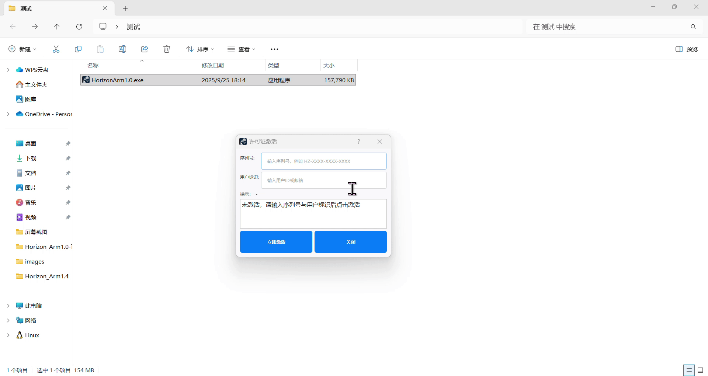
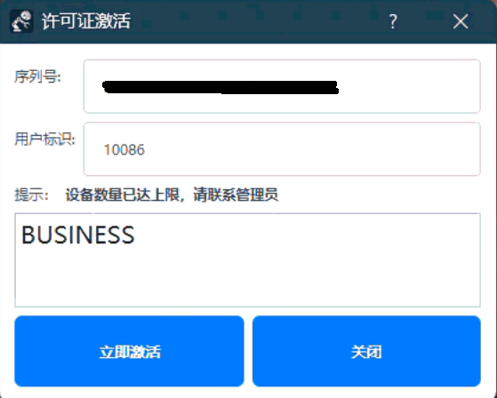

序列号与激活¶
本页面介绍如何在程序界面中完成激活，并说明激活后的离线使用方式。
序列号是唯一的不可复制、不可多设备共享

首次激活演示
激活入口¶
- 菜单：帮助 → 许可证
- 在弹出的窗口中输入你的序列号与用户标识（例如手机号或邮箱），点击“立即激活”
- 成功后，窗口显示“激活成功”，下次启动将自动生效
（首次激活将在打开软件时进行，如选择关闭激活窗口以及选择不激活将无法正常使用）

序列号已使用（超限）
离线使用¶
- 首次激活成功后，软件会记住此电脑的激活状态
- 之后即使没有网络也可以正常启动与使用
序列号销毁锁定¶
销毁锁定为不可逆操作，一旦执行，该序列号不再允许在任何设备上使用。
触发方式¶
- 主动销毁：在许可证管理界面执行“销毁并锁定”
- 管理员锁定：出于合规或安全要求由管理员执行
- 违规触发：检测到异常使用（如多设备滥用）后触发锁定
锁定后的表现¶
- 激活状态显示：“序列号已锁定（已销毁）”
- 本机离线凭据：在下一次启动验证时失效
- 再次激活：任意设备上均会被拒绝
使用建议¶
- 谨慎操作：仅在明确不再需要该序列号时执行销毁
- 如需迁移使用权：联系管理员完成合规迁移后再考虑销毁
- 误锁定处理：联系技术支持进行人工复核（不可保证恢复）
常见提示¶
- “提示：未激活，请输入序列号与用户标识后点击激活”
- 按要求填写并点击“立即激活”
- “提示：已激活（本机）”
- 说明此计算机已经激活，无需再次操作
- “提示：设备数量已达上限”
- 当前序列号可绑定的设备数量已用尽，请联系管理员
- "提示：序列号已锁定（已销毁）"
- 序列号已被永久锁定，无法继续使用，请联系管理员
若遇到无法激活或多次失败，请到"故障排除 → 激活相关问题"查看处理方法，或联系技术支持。
序列号与激活 | 让软件使用更合规
© 2025 Horizon Arm • 智能、灵活、易用